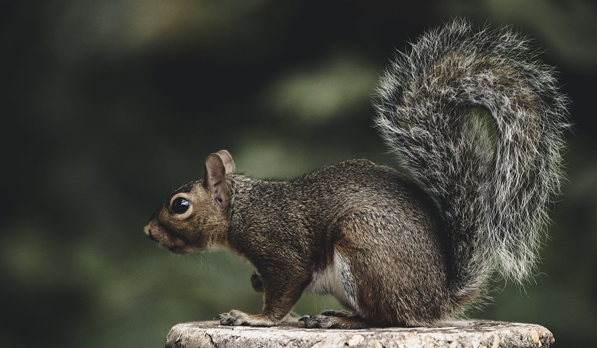

Animais Fantásticos


Raposa
As raposas são mamíferos inteligentes e versáteis que pertencem à família dos canídeos. São conhecidas por sua pelagem avermelhada característica, orelhas pontiagudas e cauda espessa e felpuda. Esses animais habitam diversos ambientes, desde densas florestas até áreas urbanas, demonstrando uma incrível capacidade de adaptação. Sua distribuição geográfica é ampla, sendo encontradas em quase todos os continentes.
Estes astutos animais são onívoros, alimentando-se de uma variedade de itens como roedores, pássaros, frutas, insetos e até pequenos répteis. Sua dieta varia conforme a estação e a disponibilidade de alimentos em seu habitat. As raposas desenvolveram técnicas de caça impressionantes, incluindo a capacidade de pular alto para surpreender presas. Curiosamente, algumas espécies chegam a fingir-se de mortas para atrair pássaros desavisados.
O comportamento das raposas é geralmente solitário, exceto durante a época de reprodução. Neste período, formam pares monogâmicos e trabalham juntos para criar seus filhotes. As tocas, muitas vezes abandonadas por outros animais, são adaptadas para abrigar a família. Os filhotes nascem cegos e dependentes, mas rapidamente desenvolvem habilidades essenciais para sobreviver.
Na cultura humana, as raposas frequentemente aparecem como símbolos de astúcia e inteligência em fábulas e folclore. Sua capacidade de sobreviver perto de áreas urbanas as tornou tanto admiradas quanto consideradas pragas em algumas regiões. Apesar dos desafios como perda de habitat, muitas espécies de raposas continuam a prosperar devido à sua notável adaptabilidade.
Esquilo
Os esquilos são pequenos roedores encantadores que pertencem à família Sciuridae. Existem mais de 200 espécies, divididas entre esquilos arborícolas, terrestres e voadores (que na verdade planam). São facilmente reconhecíveis por seus corpos ágeis, olhos vivos e caudas peludas que servem como leme durante saltos. Esses animais ocupam diversos habitats, desde florestas temperadas até parques urbanos.
Sua alimentação consiste principalmente em nozes, sementes, frutas e, ocasionalmente, insetos e ovos de pássaros. Os esquilos desenvolveram um comportamento peculiar de armazenar comida para os meses de inverno, enterrando nozes ou escondendo-as em fendas de árvores. Curiosamente, sua memória espacial é tão boa que conseguem recuperar cerca de 80% de seus estoques escondidos. Os 20% esquecidos acabam por germinar, tornando-os importantes dispersores de sementes.
Os esquilos são animais diurnos e extremamente ativos durante o dia. Eles se comunicam através de uma variedade de sons, desde chilros agudos até ruídos de alerta quando percebem perigo. Suas caudas não servem apenas para equilíbrio - os movimentos bruscos funcionam como sinais visuais para outros esquilos. Na primavera, é comum observar filhotes aprendendo a saltar entre os galhos sob os cuidados da mãe.
Estes pequenos roedores enfrentam diversos predadores naturais, como aves de rapina, cobras e mamíferos carnívoros. Em ambientes urbanos, adaptaram-se para conviver com humanos, muitas vezes roubando comida de comedouros de pássaros. Apesar de serem considerados pragas em algumas situações, sua presença alegre e comportamento curioso os tornam favoritos entre observadores de natureza.
Urso
Os ursos são mamíferos poderosos que pertencem à família Ursidae, incluindo oito espécies vivas. Entre elas estão o imponente urso-pardo, o majestoso urso-polar e o carismático panda-gigante. Estas criaturas variam muito em tamanho - desde o pequeno urso-malaio até o massivo urso Kodiak, que pode atingir 3 metros de altura quando ereto. Seus corpos são adaptados para força, com garras não retráteis ideais para cavar e escalar.
A dieta dos ursos varia significativamente entre espécies. Enquanto o urso-polar é quase exclusivamente carnívoro, alimentando-se de focas, o panda sobrevive quase que exclusivamente de bambu. Os ursos pardos são verdadeiros onívoros, consumindo desde frutas e mel até peixes como o salmão, que capturam habilmente durante a desova. Seu olfato é extraordinariamente aguçado, capaz de detectar comida a quilômetros de distância.
O comportamento dos ursos inclui um fascinante ciclo de hibernação para algumas espécies em climas temperados. Durante o outono, acumulam grandes quantidades de gordura corporal para sobreviver aos meses de inverno sem comer. As fêmeas dão à luz durante a hibernação, amamentando os filhotes até a primavera. Apesar de sua aparência desajeitada, os ursos podem correr a velocidades impressionantes (até 50 km/h no caso do urso-pardo) e são excelentes nadadores.
Atualmente, muitas espécies de ursos enfrentam ameaças significativas. O urso-polar está especialmente vulnerável devido ao derretimento do gelo ártico, enquanto o panda-gigante permanece em perigo apesar dos esforços de conservação. Na cultura humana, os ursos aparecem como símbolos de força e proteção em muitas mitologias, mas também são vítimas de caça ilegal e conflitos com humanos por território e recursos.
Lobo
Os lobos são os maiores membros da família Canidae e ancestrais de todos os cães domésticos. Estes magníficos predadores possuem corpos esguios e musculosos, adaptados para percorrer longas distâncias em busca de presas. Sua pelagem varia do branco puro (lobos árticos) ao cinza e até preto, servindo como camuflagem em diferentes habitats. Os lobos são encontrados principalmente no Hemisfério Norte, ocupando florestas, tundras e até alguns ambientes desérticos.
Vivendo em estruturas sociais complexas chamadas matilhas, os lobos desenvolveram um sofisticado sistema de comunicação. Os uivos servem para coordenar caçadas, marcar território e reunir o grupo, podendo ser ouvidos a mais de 10 km de distância. A matilha é liderada por um casal alfa, que geralmente são os únicos a se reproduzir. Todos os membros colaboram na criação dos filhotes e na defesa do território, que pode abranger centenas de quilômetros quadrados.
Como predadores de topo, os lobos desempenham um papel crucial no equilíbrio dos ecossistemas. Sua caça seletiva mantém populações de herbívoros saudáveis, prevenindo a superpopulação e o superpastoreio. Suas presas principais incluem alces, veados e bisões, que perseguem em grupos usando estratégias elaboradas. Contrariamente ao mito do "lobo solitário", são animais profundamente sociais que formam laços familiares fortes e duradouros.
Apesar de sua importância ecológica, os lobos foram historicamente perseguidos e quase exterminados em muitas regiões. Programas de reintrodução, como o do Parque Yellowstone, demonstraram seu impacto positivo na restauração de ecossistemas. Na cultura humana, os lobos simbolizam tanto o perigo quanto a lealdade familiar, aparecendo proeminentemente nas mitologias de muitas culturas indígenas como professores e guides espirituais.
Macaco
Os macacos são primatas incrivelmente diversos, divididos em duas grandes categorias: os do Novo Mundo (Américas) e do Velho Mundo (África e Ásia). Esta variedade inclui desde os minúsculos saguis-pigmeus até os imponentes mandris com seus rostos coloridos. A maioria das espécies é arborícola, com corpos adaptados para vida nas copas das árvores - braços longos, caudas preênseis (em algumas espécies) e visão binocular aguçada. Seus cérebros desenvolvidos permitem comportamentos sociais complexos e solução de problemas.
A alimentação dos macacos varia conforme a espécie e habitat. Alguns são especializados em folhas (como o colobo), outros preferem frutas, enquanto espécies como o macaco-de-cheiro complementam sua dieta com insetos e pequenos vertebrados. Muitos desenvolveram técnicas impressionantes de forrageamento - os macacos-prego usam pedras como ferramentas para quebrar cocos, enquanto os chimpanzés fabricam "varas" para pescar cupins. Esta capacidade de usar ferramentas coloca algumas espécies entre os animais mais inteligentes do planeta.
A vida social dos macacos é particularmente fascinante. Vivem em grupos hierárquicos que podem ter de poucos indivíduos até centenas, dependendo da espécie. Desenvolvem complexas relações sociais, incluindo alianças, reconciliações após conflitos e até formas primitivas de "política". A comunicação inclui vocalizações distintas, expressões faciais e linguagem corporal. Mães macacas mantêm laços estreitos com seus filhotes por anos, ensinando-lhes habilidades essenciais para sobreviver.
Infelizmente, cerca de 60% das espécies de primatas estão ameaçadas devido ao desmatamento, caça e comércio ilegal. Espécies emblemáticas como os orangotangos estão perdendo rapidamente seu habitat para plantações de óleo de palma. Conservacionistas trabalham para proteger estas criaturas inteligentes, cujo estudo continua a revelar insights sobre a evolução humana e a cognição animal. Nos zoológicos e santuários, os macacos encantam visitantes com sua personalidade vívida e comportamentos que espelham surpreendentemente os nossos.
Leão
O leão (Panthera leo) é o segundo maior felino do mundo, superado apenas pelo tigre. Conhecido como "rei dos animais", o leão macho é imediatamente reconhecível por sua majestosa juba, que varia do loiro ao preto conforme a idade e genética. As fêmeas, embora sem juba, são igualmente impressionantes - caçadoras ágeis e eficientes. Historicamente distribuídos pela África, Europa e Ásia, hoje estão restritos principalmente à África subsaariana, com uma pequena população remanescente na Índia.
A estrutura social dos leões é única entre os felinos. Vivem em bandos chamados "coalizões", tipicamente compostos por fêmeas aparentadas, seus filhotes e um ou mais machos. Enquanto as leoas fazem até 90% da caça, trabalhando em equipe para derrubar presas como zebras e gnus, os machos protegem o território contra intrusos. Um rugido de leão pode ser ouvido a 8 km de distância, servindo para marcar dominância e reunir o grupo. Ao contrário da crença popular, passam até 20 horas por dia descansando.
A estrutura social dos leões é única entre os felinos. Vivem em bandos chamados "coalizões", tipicamente compostos por fêmeas aparentadas, seus filhotes e um ou mais machos. Enquanto as leoas fazem até 90% da caça, trabalhando em equipe para derrubar presas como zebras e gnus, os machos protegem o território contra intrusos. Um rugido de leão pode ser ouvido a 8 km de distância, servindo para marcar dominância e reunir o grupo. Ao contrário da crença popular, passam até 20 horas por dia descansando.
Atualmente classificados como vulneráveis, os leões enfrentam ameaças como perda de habitat, conflitos com humanos e caça esportiva. Suas populações diminuíram 43% nas últimas décadas. Na cultura humana, simbolizam coragem e nobreza - aparecendo em brasões, bandeiras e mitologias de diversas civilizações. Programas de conservação buscan equilibrar a proteção destes ícones africanos com as necessidades das comunidades locais, promovendo o turismo sustentável como alternativa à caça.
Números
FAQ
- Qual a idade dos animais?
- As raposas são animais mamíferos e onívoros pertencentes à família Canidae. São vulpídeos de porte médio, caracterizados por um focinho comprido e uma cauda longa e peluda.
- Eles são fantásticos?
- Também apresentam como particularidade suas pupilas ovais, semelhantes às pupilas verticais dos felídeos.
- Qual a diferença?
- As raposas são animais mamíferos e onívoros pertencentes à família Canidae. São vulpídeos de porte médio, caracterizados por um focinho comprido e uma cauda longa e peluda.
- Como proteger?
- Também apresentam como particularidade suas pupilas ovais, semelhantes às pupilas verticais dos felídeos.


- 


Contato

- contato@origamid.com
- +55 (21) 9999-9999
- Rua do Conde, nº 21
- Rio de Janeiro - RJ
- Doe 0 bitcoin para nos ajudar!
- Seg à Sex das 8 às 18